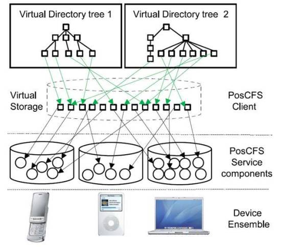

PosCFS+
PosCFS+ is a distributed file system integrating personal devices.
In the research, a storage virtualization technique on file system layer had been proposed in order to provide integrated data management on personal mobile devices. PosCFS+ is a self-configurable peer-to-peer file system in which all the storages of mobile devices in PAN can be automatically and dynamically integrated as a virtual storage space by Universal Plug-and-Play (UPnP) protocol.
It also provides a dynamic namespace management based on file metadata. (also known as semantic file addressing) For the purpose, all the files on the storage are tagged with semantic metadata extracted on their creation time, or with some other information explicitly annotated by either users or applications. The namespace of the virtual storage, called virtual directory trees, are dynamically provided for each client-side based on the metadata and pre-defined rules for the namespace management.
For interoperability, WebDAV, a HTTP extension for file I/Os, is used for basic file I/O operations and other extended file system operations are defined as UPnP actions.

Publications
- An Agent Framework for CE Devices to Support Storage Virtualization on Device Ensembles. Woojoong Lee, Young-Ki Hong, and Chanik Park. 6th Annual IEEE Consumer Communications & Networking Conference (CCNC 09) 2009.
- An Event Notification Framework for PosCFS+ Distributed File Service in Personal Area Network. Woojoong Lee and Chanik Park. International Conference On Next-Generation Computing 2007(pp.217-221).
- PosCFS+: A Self-Managed File Service in Personal Area Network. Woojoong Lee, Shine Kim, and Chanik Park. ETRI Journal, vol. 29, no. 3, June 2007, pp. 281-291.
- PosCFS: An Advanced File Management Technique for the Wearable Computing Environment. Woojoong Lee, Shine Kim, Jonghwa Shin and Chanik Park. Lecture Notes in Computer Science 4096, pp.965-975 – Proc. EUC’06, IFIP, 2006.
Patents
- PosCFS+: A CONTEXT-AWARE AND SELF-MANAGED FILE SERVICE IN PERSONAL AREA NETWORK. Chanik Park, Woojoong Lee and Shin Kim. U.S. Patent Application, 11/869223, October 10, 2006.
- 유비쿼터스 환경에서 데이터 통합관리를 위한 분산 파일서비스 방법 및 시스템. 박찬익,이우중,김신. Published in Korea, 10-0932642, 20091210.